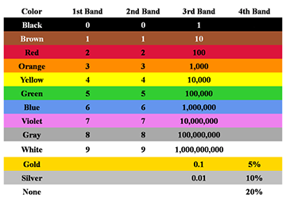

कार्बन प्रतिरोध एवं इसका रंग-कूट
कार्बन प्रतिरोध :
- प्रतिरोधक के रुप में उपयोग किये गये पदार्थ के अनुसार प्रतिरोध दो प्रकार के होते हैं।
- चालक तार प्रतिरोधक
- कार्बन प्रतिरोधक
चालक तार प्रतिरोधक तथा कार्बन प्रतिरोधक में तुलना :
- चालक तार प्रतिरोधक की तुलना में तथा कार्बन प्रतिरोधक का आकार बहुत छोटा होता है।
- ज्यादातर इसका उपयोग इलेक्ट्रानिक परिपथ में किया जाता है
- इसे आसानी से बनाया जा सकता है।
- लेकिन चालक तार प्रतिरोधक अधिक टिकाऊ होता है।
प्रतिरोधकों का रंग कोड (वर्ण संकेतन) :
- कार्बन प्रतिरोधक पर बने वलय या पट्टियाँ देखकर कार्बन प्रतिरोधक का प्रतिरोध निकाला जा सकता है।
- कार्बन प्रतिरोधक में तीन या चार पट्टियाँ होती हैं।
- प्रथम पट्टी पहला अंक व्यक्त करता है।दुसरा पट्टी दुसरे अंक को व्यक्त करता है।
- प्रथम पट्टी पहला अंक व्यक्त करता है।दुसरा पट्टी दुसरे अंक को व्यक्त करता है।
यदि किसी प्रतिरोधक में चौथा प्रतिरोधक होता है तो यह त्रुटी-सीमा को व्यक्त करता है।यदि चौथी पट्टी सुनहरे या चाँदी के रंग का होता है तो त्रुटी-सीमा 5% या10% को निरुपित करता है। चौथी पट्टी के अनुपस्थिति में त्रुटी-सीमा 20% होती है।
Tolerance त्रुटीसीमा :
त्रुटी-सीमा प्रतिरोधक में अधिकतम प्रतिशत त्रुटी को निरुपित करता है।
How to decide the numerical value associated with each colour

- Memory aid: Black is first & Brown is second. Also gray and white are together
.jpg)